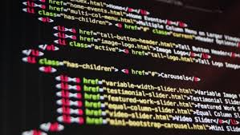

La programación informática es todo proceso que involucra el diseño, codificación, mantenimiento, y protección de cualquier fuente de programas. El objetivo principal de la programación informática es la creación de softwares, con el fin
de ser ejecutados a través de computadoras, programas o plataformas.

El primer modelo de programación del mundo se remonta al año 1842. En 1840, Ada Lovelace (1814-1852) consiguió definir el principio de iteraciones sucesivas mediante la ejecución de una única operación.
TEMAS VISTOS EN EL AÑO
HTML5
El Lenguaje de Marcado de Hipertexto (HTML) es el código que se utiliza para estructurar y desplegar una página web y sus contenidos. Por ejemplo, sus contenidos podrían ser párrafos, una lista con viñetas, o imágenes y tablas de datos.
CSS3
CSS es un lenguaje de diseño gráfico que permite definir y crear la presentación de un documento estructurado escrito en un lenguaje de marcado. Es muy usado para establecer el diseño visual de los documentos web e interfaces de usuario
escritas en HTML.
CREACION DE FORMULARIOS
En informática, un formulario consta de un conjunto de campos de datos solicitados por un determinado programa, los cuales se almacenarán para su procesamiento y posterior uso.
CREACION DE TABLAS
Las tablas son uno de los elementos fundamentales de HTML para mejorar la puesta visual de las páginas web. Antes de que aparecieran las capacidades de CSS para realizar maquetaciones avanzadas en las páginas web, las tablas eran la única
forma de crear documentos HTML con disposiciones complejas.
VISUAL STUDIOS CODE
Editor de código fuente independiente que se ejecuta en Windows, macOS y Linux. La elección principal para desarrolladores web y JavaScript, con una gran cantidad de extensiones para admitir casi cualquier lenguaje de programación.

.jpg)